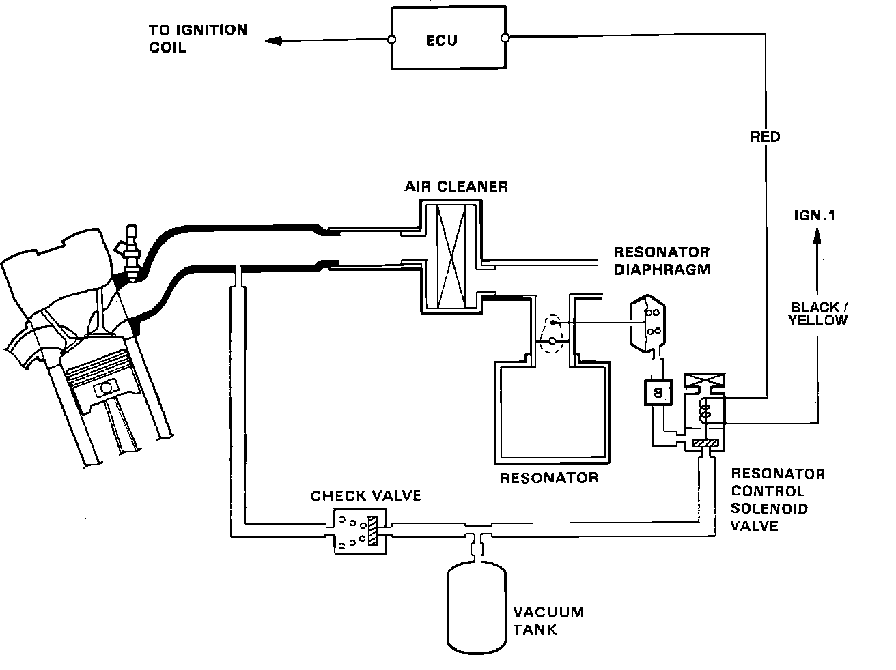

Exhaust Resonator
Resonator Control System:

The Resonator is located in the intake air hose, ahead of the air cleaner assembly. The Resonator is used to decrease intake air noise. When the engine speed is below 3000 RPM, the ECU supplies current to the resonator control solenoid valve. This opens the solenoid sending intake manifold vacuum to the resonator diaphragm which opens the resonator chamber. The Resonator system does not activate and is not used at engine speeds above 3000 RPM.